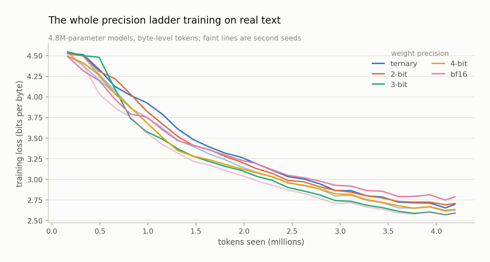
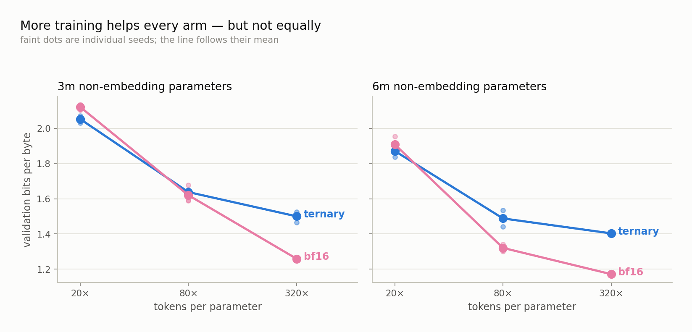
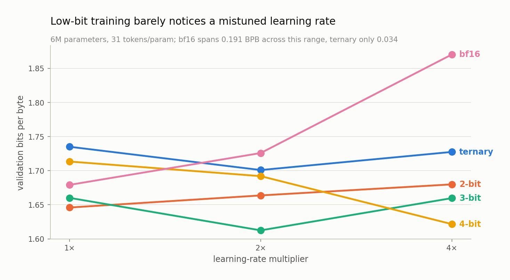
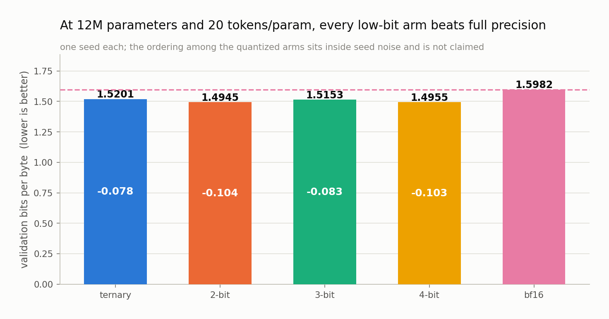
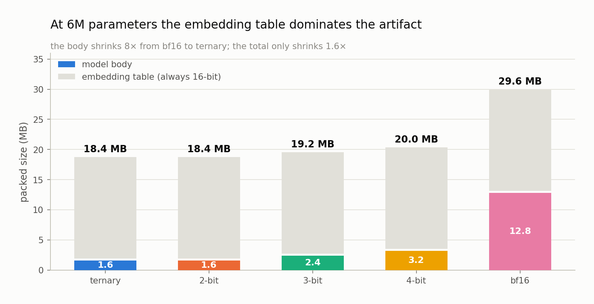

Chapter 13 — What we found so far#
This chapter reports every result the project has produced to date, with its uncertainty attached. You will see where low precision wins, where it loses, where the answer is still inside the noise, and — just as important — which questions the data cannot yet touch.
Everything here comes from runs recorded in the project's results file. Each row carries the hash of the configuration that produced it, so any number below can be traced back to the exact manifest entry, and the figures regenerate from that file by script. Where a difference does not clear the noise bar described in Chapter 3, this chapter says so and makes no claim.
The stack works end to end#
The first thing to establish was not a research result at all. It was whether the machinery — quantizers, trainer, evaluator, exporter — could run a full precision ladder from raw text to a packed artifact without silently corrupting something along the way.

Five models, identical in every respect except the precision of their linear layers, trained on the text of Frankenstein with byte-level tokens. All five learned. All five exported to packed artifacts that reloaded to bitwise-identical quantized values. The ternary model's body packed to 1.36 MB against full precision's 9.77 MB — the 7.2× ratio you would predict from 16 bits versus 1.58, arrived at by measuring real packed bytes rather than dividing.
That run proved nothing about scaling laws. It proved the pipeline does not lie, which is the precondition for everything after it.
The crossover, with its noise floor measured#
The first real experiment used 28 runs at 3M and 6M parameters on FineWeb-Edu, comparing ternary against full precision at three training durations, with three seeds at 3M and two at 6M so run-to-run noise could be measured rather than assumed. Later runs extend the same comparison up the ladder; the table below is regenerated from the results file every time this book is rebuilt, so it always shows every cell measured to date.
| Model | Tokens/param | Ternary BPB | bf16 BPB | Gap | 2σ bar | Verdict |
|---|---|---|---|---|---|---|
| 3M | 20× | 2.0530 | 2.1217 | −0.0687 | 0.0409 | ternary better |
| 3M | 80× | 1.6381 | 1.6204 | +0.0178 | 0.1008 | inside the noise |
| 3M | 320× | 1.5003 | 1.2591 | +0.2413 | 0.0611 | bf16 better |
| 6M | 20× | 1.8718 | 1.9089 | −0.0372 | 0.1311 | inside the noise |
| 6M | 80× | 1.4885 | 1.3210 | +0.1675 | 0.1313 | bf16 better |
| 6M | 320× | 1.4035 | 1.1716 | +0.2319 | one seed only | bf16 better (unbarred) |
| 12M | 20× | 1.5201 | 1.5982 | −0.0781 | one seed only | ternary better (unbarred) |
| 12M | 80× | 1.3242 | 1.1766 | +0.1476 | one seed only | bf16 better (unbarred) |
Read the 3M row as a story in three acts. Undertrained, ternary wins by more than twice the noise bar. Around 80 tokens per parameter the two are indistinguishable and the honest answer is "we cannot tell". By 320× full precision wins by four times the bar.

Two further observations, both of which the fitted law will have to reproduce:
The deficit grows without saturating. From 20× to 320× at 3M, the ternary gap moves −0.069 → +0.018 → +0.241, monotonically, with no sign of flattening. This is the shape reported for post-training quantization by Ouyang and colleagues, now observed for models trained low-bit from scratch.
The deficit also changes with model size at fixed training duration, though how is not yet settled. At 80 tokens per parameter, ternary trails by 0.018 at 3M, 0.168 at 6M, and 0.148 at 12M. The jump from 3M to 6M is larger than the noise bar and is real. The step from 6M to 12M goes the other way, but by 0.020 — well inside the 0.131 bar of the 6M cell — so it is not a decline, and it is not a continued rise either. The honest reading is that the deficit grows sharply somewhere below 6M and is flat within noise from there to 12M, and that resolving it needs more seeds at the larger sizes.
Whichever way it resolves, an interaction between size and training duration is exactly where the two candidate functional forms in Chapter 14 disagree — so the fit will have something real to bite on rather than two equally good answers.
It is a precision effect, not a learning-rate artifact#
Ternary arms run at twice the learning rate of full-precision arms, following the BitNet recipe. That creates an obvious alternative explanation for the 20× result: maybe a higher learning rate helps when you train briefly, and precision has nothing to do with it.
Twelve control runs settled it by crossing precision against learning rate at the contested cells.
| Cell | ternary @2× | ternary @1× | bf16 @1× | bf16 @2× |
|---|---|---|---|---|
| 3M, 20× | 2.0530 | 2.1185 | 2.1217 | 2.1617 |
| 3M, 80× | 1.6381 | 1.6532 | 1.6204 | 1.6460 |
| 6M, 20× | 1.8718 | — | 1.9089 | 1.9297 |
| 6M, 80× | 1.4885 | — | 1.3210 | 1.3462 |
Giving full precision the higher learning rate makes it worse in every cell tested. Running ternary at the lower rate erases its advantage entirely — at 3M and 20×, ternary at 1× scores 2.1185 against full precision's 2.1217, a difference of nothing. So each arm has a genuine preference, the preferences differ, and comparing each at its own best setting reproduces the original table unchanged. The crossover survives.
Low-bit training barely notices a mistuned learning rate#
Fifteen probe runs swept the learning rate across five precisions at 6M parameters. The intended output was a tuning rule. The interesting output was something else.

Across a fourfold change in learning rate, full precision moved 0.191 bits per byte. Ternary and 2-bit moved 0.034 — five to six times less sensitive.
The mechanism follows from what a quantizer is. Rounding to a fixed set of levels is a projection: it collapses a range of real values onto the same output. A larger optimizer step moves the master weight further, but unless it crosses a rounding boundary, the effective weight the model actually uses does not change at all. The quantizer absorbs a large part of the mistuning.
The practical reading is the opposite of the folklore. Native low-bit training is often described as delicate. On this evidence it is more forgiving than full precision — you do not have to find the learning rate, you have to stay off a cliff, and the cliff is further away.
The same probes also produced a warning about method, which Chapter 10 tells in full: three of the five arms had their best value at an edge of the probe grid, meaning the true optimum was never bracketed. Extra runs are extending the grid before any rule is frozen. A default that was never tested is not a measurement, and it is easy to mistake one for the other.
At 12M parameters, every low-bit arm beats full precision#
The wider grid puts all five precisions head to head at 12M parameters. Undertrained, at 20 tokens per parameter:

| Arm | Validation BPB | vs bf16 |
|---|---|---|
| 2-bit | 1.4945 | −0.104 |
| 4-bit | 1.4955 | −0.103 |
| 3-bit | 1.5153 | −0.083 |
| ternary | 1.5201 | −0.078 |
| bf16 | 1.5982 | — |
Every quantized arm beats full precision, by margins of 0.078 to 0.104 bits per byte. The crossover seen for ternary at 3M and 6M is not a ternary quirk — it is a property of low-bit training in the undertrained regime, visible across the ladder.
The ordering among the quantized arms is a different matter. These are single-seed runs, and the spread from best to worst quantized arm is 0.026 bits per byte — far inside the noise bar for a single seed at this size. So: no claim. 2-bit is not "the best precision at 12M" on this evidence, and treating that ordering as a finding would be exactly the error the 2σ rule exists to prevent.
And by 80 tokens per parameter it has flipped#
The same five configurations, trained four times as long, are filling in now:
| Arm | Validation BPB | vs bf16 |
|---|---|---|
| bf16 | 1.1766 | — |
| 2-bit | 1.2832 | +0.107 |
| ternary | 1.3242 | +0.148 |
Ternary, which was 0.078 ahead of full precision at 20 tokens per parameter, is 0.148 behind it at 80×. The sign change that appeared at 3M and again at 6M reproduces at 12M — the third size in a row, and the clearest statement so far that the answer to "which precision should I use?" is not a constant but a function of how long you train.
The second arm to land is 2-bit, at 0.107 behind. That ordering — ternary losing more than 2-bit — is the first hint of something the remaining arms will settle. If 3-bit and 4-bit come in with progressively smaller deficits, the loss from overtraining is graded by bit width, and the location of each precision's crossover differs; the fitted law then has a genuine surface to reproduce rather than a single boundary. If instead the remaining arms bunch together, precision governs only how much you lose and not when you start losing. Chapter 14 explains why the two candidate functional forms make different predictions here.
One caution about reading that ordering too eagerly: these are single-seed runs, and the ternary-to-2-bit difference of 0.041 is smaller than the noise bar measured at the size below. The trend is worth watching, not citing.
What has actually been measured#
Because this chapter is written while the grid is still running, here is the honest coverage map — how many precision arms exist at each size and training duration. Empty cells are not results; they are runs that have not happened.
| Size | 20× | 80× | 320× |
|---|---|---|---|
| 3M | 2 arms | 2 arms | 2 arms |
| 6M | 2 arms | 2 arms | 2 arms |
| 12M | 5 arms | 3 arms | — |
What the data cannot yet say#
Being clear about the boundary matters as much as reporting the results.
There is no fitted law yet. The grid is still running. Nothing in this chapter tells you where the crossover sits for a 1-billion-parameter model or a 2 GB budget; extrapolating from six cells would be guessing with extra steps.
Nothing has been validated out of sample. The blind extrapolation test — freeze the fitted law, commit predictions with a timestamp, then train the 125M anchors and compare — has not run. Until it does, the law is a curve through points, not a tested prediction.
No downstream task results exist. At 3M to 12M parameters, benchmark scores are indistinguishable from guessing. They gate nothing here and are not reported.
The precision arms bundle three changes. A quantized arm differs from full precision in weight quantization, 8-bit activation quantization, and an extra normalization layer. An external reviewer flagged that a single 4-bit-weight, 16-bit-activation control run would separate the weight effect from the activation effect. That run is scheduled and has not happened.
The byte savings at these sizes are smaller than they look. The model body shrinks by up to eight times, but the embedding table stays 16-bit and dominates a small artifact. At 6M parameters the ternary body is 1.6 MB against a 16.8 MB embedding table — so the total artifact shrinks by roughly 1.6×, not 8×.

This is why the project fits its laws on non-embedding parameters and states byte budgets as body bytes, and why both counts appear next to each other every time a footprint is quoted. At the scales where these models get deployed the embedding is a small fraction — but at the scales where the law is being fitted it is not, and pretending otherwise would inflate every claim.
What to remember#
The pipeline was verified end to end before any research claim was made, and the ternary-versus-full-precision crossover is now measured with a real noise floor: ternary wins at 20 tokens per parameter, loses by 320×, and the deficit grows monotonically with both training duration and model size. Control runs ruled out learning rate as the explanation, so the effect belongs to precision. A side finding is that quantized training is five to six times less sensitive to learning rate than full precision, which makes it cheaper to tune, not harder. At 12M parameters every low-bit arm beats full precision in the undertrained regime, though the ordering among them is inside the noise and is not claimed. No law has been fitted yet, nothing has been validated out of sample, and at these small sizes the embedding table limits how much of the body's byte savings reach the final artifact.